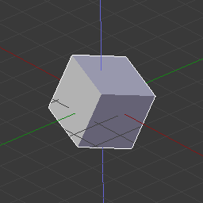
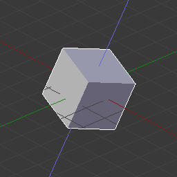
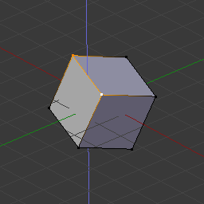

Зблокування з віссю -- Axis Locking¶
{kind=link}
Зблокування з віссю.
Ця опція лімітує трансформування визначеною віссю.
Transformations (translation/scale/rotation) in Object Mode and Edit Mode (as well as extrusions in Edit Mode) can be locked to a particular axis relative to the current transform orientation. By locking a transformation to a particular axis you are restricting transformations to a single dimension.
Використання¶
Зблокована вісь буде показуватися яскравішим кольором, ніж не зблоковані осі. Наприклад на ілюстрації справа Z вісь показана світло-синім кольором, оскільки рух примушується вздовж цієї осі. Цей приклад може бути досягнуто двома шляхами:
Скорочення¶
Таке зблокування з віссю може бути змінене у будь-який час в ході трансформування, натисканням клавіш X, Y, Z.
Вказування¶

Axis constraint in action.
Утримування натисненою MMB після запуску трансформування дозволяє вам вибрати вісь, по якій воно змушене буде здійснюватися. Візуальна опція для примушування пересування стане доступною, показуючи три осі у просторі 3D Огляду -- 3D View. Пунктирна біла лінія використовується як вказівник. Вісь, вибрана для операції буде залежати від підсвіченої осі перед відпуском MMB.
When you already moved the mouse in the desired direction, pressing MMB will lock to the axis which was pointed at.
Axis Locking Types¶
Зблокування з віссю -- Axis Locking¶
Орієнтир
| Mode: | Object and Edit Modes (translate, rotate, scale, extrude) |
|---|---|
| Скорочення: | X, Y, Z or MMB after moving the mouse in the desired direction. |
Зблокування з Віссю лімітує трансформування, щоб воно здійснювалося тільки по одній осі (або, іншими словами, забороняє трансформування по інших двох осям). Об'єкт, грань, вершина або інший виділюваноздатний елемент буде у змозі переміщуватися, масштабуватися або обертатися тільки в одиничному вимірі.
Plane Locking¶
Орієнтир
| Mode: | Object and Edit Modes (translate, scale) |
|---|---|
| Скорочення: | Shift-X, Shift-Y, Shift-Z or Shift-MMB after moving the mouse in the desired direction. |
{kind=link}
Зблокування з площиною зблоковує трансформування з двома осями (або, іншими словами, забороняє трансформування по іншій одній осі), тим самим створюючи площину, в якій елемент може вільно переміщатися та масштабуватися. Зблокування з площиною впливає тільки на пересування і масштабування.
Note that for rotation, both axis and plane locking have the same effect because a rotation is always constrained around one axis. Trackball type rotations R R cannot be locked at all.
Axis Locking Modes¶
Одиничне натискання клавіші дає примушування руху по відповідній Глобальній осі. Друге натиснення клавіші цієї ж клавіші примушує рух по осі поточно обраної орієнтації трансформацій (за винятком, коли вона задана як «Глобально» -- Global -- у цьому випадку буде використана вісь орієнтації «Локально» -- Local). Нарешті, третє натискання цієї ж клавіші вилучає примушення.
Орієнтацію можна задати у вибірнику Орієнтація Трансформацій -- Transform Orientation із заголовку 3D Огляду -- 3D View.
For example, if the current transform orientation is set to Normal, pressing G to start translation, followed by Z will lock translation in the Z direction relative to the Global orientation, pressing Z again will lock translation to the Z axis relative to the Normal orientation. Pressing Z again will remove all constraints. The current mode will be displayed in the left-hand side of the 3D View header.

Z axis locking in Global orientation. |

Z axis locking in Local orientation. |

Z axis locking in Global orientation with vertex selection. |

Z axis locking in Normal orientation with vertex selection. |
{kind=link}
{kind=link}
{kind=link}
Як можна побачити на ілюстрації Режими зблокування з віссю напрямок також враховує виділення.
Зауважте, що використання зблокованої осі не заважає вам скористатися клавіатурою для уводу числових значень трансформування -- numeric transformation.